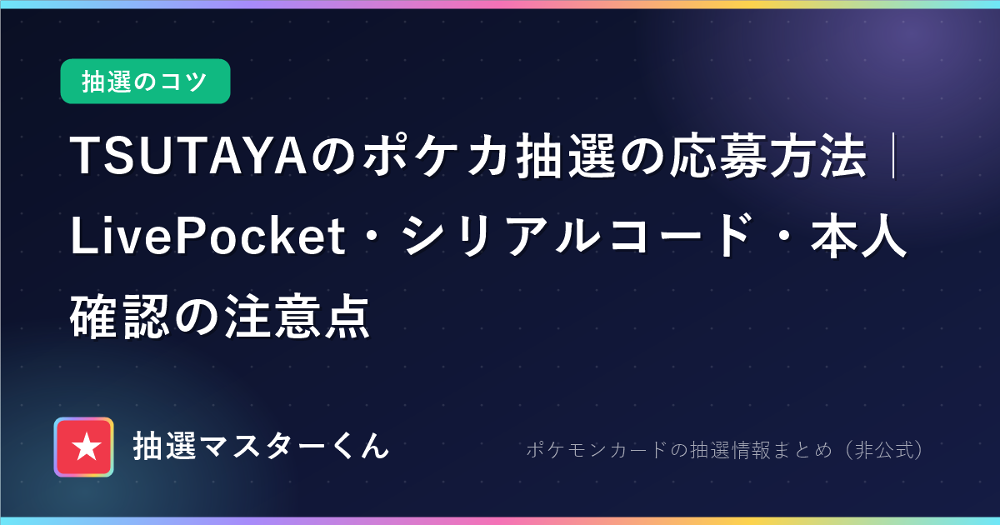

TSUTAYAのポケカ抽選は、全国一斉ではなく、店ごとに行われています。同じTSUTAYAでも、応募の方法や締切、当選後の受け取り方は店によって違うため、「どこから応募すればいいの？」と迷う人も多いはずです。
この記事では、11月26日時点で各店が出しているLivePocket（ライブポケット）の抽選ページをもとに、TSUTAYAの抽選に共通する流れと、応募の前に知っておきたい注意点をまとめました。
この記事の要点
- TSUTAYAのポケカ抽選は店ごとに行われ、チケット販売サービスのLivePocketで応募する店が多い
- 店によっては、店頭で配るシリアルコードがないと応募できない
- LivePocketの登録名は身分証と同じ本名にする。購入時に身分証やVポイントカードを見せる店が多い
- 当選した商品は応募した店の店頭で受け取り。郵送はなく、受け取り期間を過ぎると無効
- BOXはシュリンクを開けて渡す店が多い
TSUTAYAのポケカ抽選は「店ごと」に行われる
TSUTAYAは全国に店舗がありますが、ポケカの抽選は本部がまとめて受け付けるのではなく、店ごとに行われています。そのため、ある店では受付中でも、近くの別の店では抽選がない、ということもよくあります。
応募先は、各店の公式Xや店頭の掲示で案内されることがほとんどです。よく行くTSUTAYAがあるなら、その店の公式Xをフォローしておくのがいちばん確実です。
当サイトのTSUTAYAの抽選ページでは、確認できた店の抽選を商品ごとにまとめています。カードの「店舗ごとの応募先」を開くと、各店の応募ページに直接進めます。
11月26日時点で受付中のTSUTAYAの抽選
当サイトが各店の抽選ページで確認した、受付中の抽選は次のとおりです（締切が近い順）。
| 店舗 | 商品 | 締切 | 当選発表 |
|---|---|---|---|
| 北習志野駅前店（千葉） | 30th CELEBRATION BOX・ストームエメラルダ（各1BOX） | 11/26(木) 23:59 | 11/28(土)予定 |
| 神明店（福井） | 30th CELEBRATION BOX（1BOX） | 11/27(金) 23:59 | 11/28(土)にメール |
| 今市店（栃木） | ハドウシーカー（1BOX） | 11/29(日) 20:00 | 12/1(火)予定 |
| 入間仏子店（埼玉） | スペシャルデッキセットMEGA | 11/29(日) 21:45 | 12/1(火)予定 |
| 積文館書店シュロアモール店（福岡） | 30th CELEBRATION カードセット（9種） | 11/29(日) 21:45 | 12/2(水)予定 |
値段は、30th CELEBRATION BOXが1BOX 7,200円、ストームエメラルダとハドウシーカーが1BOX 6,000円、スペシャルデッキセットMEGAが5,500円、30th CELEBRATION カードセットが1種1,200円です（いずれも税込・各店の抽選ページの表示）。
ほかの店でも抽選が始まることがあるので、最新の状況はTSUTAYAの抽選ページか抽選一覧で確認してください。
応募から受け取りまでの流れ
店ごとに細かい違いはありますが、LivePocketを使う抽選はおおむね次の流れです。
- LivePocketに会員登録する（無料）。名前は本名で、生年月日も正しく入れる
- 店によっては、店頭でシリアルコードを受け取る
- 各店の抽選ページから、商品を選んで応募する
- 当選発表の日に、LivePocketのメールや画面で結果を確認する
- 決められた期間に、応募した店のレジで当選画面（QRコード）と必要な書類を見せて購入する
注意点1：シリアルコードが必要な店がある
TSUTAYAの抽選で特に気をつけたいのが、シリアルコードです。北習志野駅前店や今市店のように、店頭のカウンターで配るシリアルコードを入力しないと応募できない店があります。
シリアルコードを配る時間が決まっている店もあり、たとえば北習志野駅前店は毎日10時〜20時30分に配っています。「締切の夜に家から応募しよう」と思っていると、コードがなくて応募できない、ということになりかねません。締切の前に、一度店へ行くつもりで予定を立てておくと安心です。
注意点2：名前と本人確認
多くの店が、LivePocketに登録した名前と、身分証の名前が同じであることを求めています。ニックネームやローマ字、カタカナで登録していると、当選しても買えないことがあります。
購入のときに見せるものも店によって違います。
- 神明店：Vポイントカード（またはモバイルVカード）とマイナンバーカード（ほかの身分証は不可）
- 今市店：Vポイントカードと、顔写真付きの公的な身分証（運転免許証・マイナンバーカード・パスポートなど）
- 北習志野駅前店：国や自治体が発行した顔写真付きの身分証（学生証は不可）
TSUTAYAの抽選では、Vポイントカードの提示を求める店が目立ちます。持っていない人は、応募の前に用意しておきましょう。
注意点3：BOXはシュリンクを開けて渡す店が多い
今回確認したTSUTAYAの抽選では、BOXをシュリンク（外側の透明フィルム）を開けて渡す店が多く見られました。北習志野駅前店と今市店はシュリンクとミシン目（開封テープ）を開けた状態、神明店はビニールを破いた状態での販売と案内しています。
BOXをシュリンク付きのまま保管したい人は、通販の抽選も合わせてチェックしてみてください。シュリンクについてはシュリンク付きで届くポケカ抽選はどこ？で詳しくまとめています。
シュリンク付きで届く、受付中・予定の抽選
11月26日時点で、当サイトに載っている抽選のうち、BOXがシュリンク付きで届く販売は次のとおりです。
- ドラゴンスター通販：ストームエメラルダ（11/27 23:59締切・当選発表は11/29予定）
- ホビーサーチ：30th CELEBRATION BOX・ストームエメラルダ・アビスアイなど（11/27 17時に受付開始）
- Amazon（招待リクエスト）：ハドウシーカー・30th CELEBRATION BOXなど（締切なし・招待制）
- ノジマオンライン（シークレット販売会）：招待制・終了日は未発表
一覧は抽選一覧（シュリンク付きで絞り込み）でも見られます。お店の方針は変わることがあるので、応募前に各お店の告知で確認してください。
よくある質問
Q. 応募した店とは別のTSUTAYAで受け取れますか？
A. 今回確認した店では、どこも応募した店の店頭だけでの受け取りで、郵送もありません。
Q. 家族の分もまとめて応募できますか？
A. 1人1回、または1家族1個までとしている店がほとんどです。入間仏子店のスペシャルデッキセットMEGAは「ご家族で1個」とされています。別の名前で登録し直して応募すると無効になる店もあります。
Q. 落選したら連絡はありますか？
A. 店によって違います。神明店は当選発表の日に登録したメールアドレスへ連絡すると案内しています。詳しくは各店の抽選ページで確認してください。
出典
- TSUTAYA北習志野駅前店 抽選販売受付（LivePocket）
- TSUTAYA神明店 30th CELEBRATION 購入券抽選（LivePocket）
- TSUTAYA今市店 ハドウシーカー抽選販売受付（LivePocket）
- TSUTAYA入間仏子店 スペシャルデッキセットMEGA 抽選販売（LivePocket）
- TSUTAYA積文館書店シュロアモール店 30th CELEBRATION カードセット抽選販売受付（LivePocket）
受付中の抽選は11月26日時点で各店の抽選ページを確認したものです。日程・条件は変わることがあるので、応募前に各店の告知で確認してください。
当サイトは非公式のファンサイトです。価格・日程などは記事公開時点の情報なので、最新の情報は公式サイトや各販売店でご確認ください。